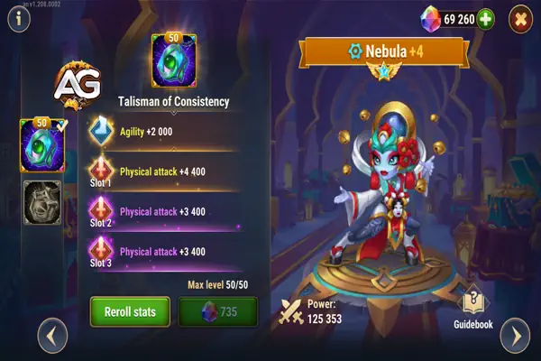
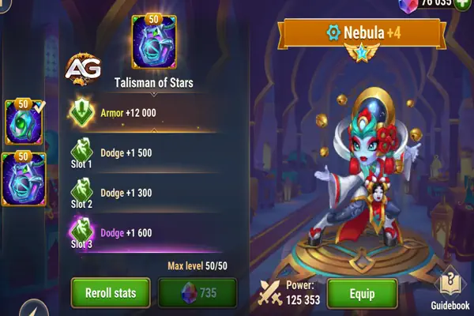
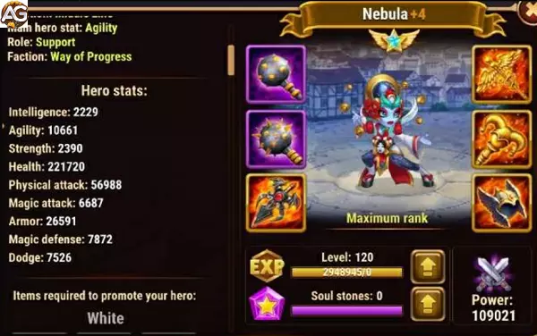

Guia da Nebula Hero Wars Mobile
- Por: Alexandre Domingos. .
Libere o poder da Nebula: amplifique os ataques da sua equipe, cure aliados e devaste inimigos com precisão. Será que ela é a virada de jogo que sua equipe precisa?
Atributos Principais de Nebula
| Atributo | Valor |
|---|---|
| Posição | Linha do Meio |
| Função | Suporte |
| Estatística Principal | Agilidade |
| Facção | Progresso |
| Como obter Pedras de Alma | Eventos, Baú Heróico, Loja de Guerra |
Tier List 2025
| Tier List | Classificação |
|---|---|
| Tier List Geral | S+ |
| Tier List de Hidra | A+ |

Despertando o Potencial de Nebula: Dominando o Equilíbrio em Hero Wars Alliance
No cenário em constante evolução de Hero Wars, poucos heróis brilham tão intensamente quanto Nebula. Proveniente da facção Progresso, Nebula se destaca como um testemunho de brilhantismo estratégico e suporte versátil. No cerne de sua habilidade está a enigmática habilidade, Equilíbrio. Neste guia abrangente, vamos explorar as habilidades de Nebula, focando especialmente no potencial transformador do Equilíbrio.
Compreendendo as Forças de Nebula:
Nebula não é apenas mais uma personagem; ela é uma peça-chave, uma pedra fundamental para o sucesso de qualquer equipe que tenha a sorte de tê-la. Seu valor estratégico transcende meramente a produção de dano ou as capacidades de cura. A verdadeira força de Nebula reside em sua capacidade de capacitar seus aliados por meio do Equilíbrio, mudando o rumo da batalha a cada movimento de sua mão de apoio.
Decifrando o Equilíbrio:
O Equilíbrio não é apenas uma habilidade; é um fator de mudança de jogo. Com o Equilíbrio, Nebula transforma seus ataques básicos em um catalisador para a vitória. Cada ativação do Equilíbrio concede um impulso temporário tanto para os atributos de ataque físico quanto mágico a um aliado próximo, durando formidáveis cinco segundos. Mas não se trata apenas dos números; trata-se do impacto.
Imagine combinar Nebula com heróis como Isaac, Juiz ou K'arkh. O Equilíbrio se integra perfeitamente com suas habilidades, elevando sua eficácia a níveis sem precedentes. Os ataques físicos de Isaac ganham uma ferocidade renovada, enquanto o poder mágico de Juiz se torna uma força imparável. O campo de batalha se torna um palco para o poder combinado deles, orquestrado pela mão orientadora de Nebula.
Utilização Estratégica do Equilíbrio:
Para realmente aproveitar o potencial do Equilíbrio, a visão estratégica é essencial. Posicione Nebula estrategicamente, garantindo que sua aura de suporte englobe os heróis que estão na linha de frente da batalha. Seja fortalecendo as capacidades ofensivas de um tanque ou amplificando a produção de dano de um causador de dano, cada ativação do Equilíbrio deve ser um passo calculado rumo à vitória.
Além disso, priorize as melhorias na habilidade Equilíbrio de Nebula. Como a espinha dorsal de sua utilidade estratégica, investir no Equilíbrio garante que Nebula permaneça uma força formidável ao longo de todo o jogo. Maximize sua potência e veja sua equipe ascender a novas alturas de dominação.
Desbloqueando o Potencial Total de Nebula:
O Equilíbrio não é apenas uma habilidade; é uma filosofia. Trata-se de capacitar seus aliados, moldar o campo de batalha a seu favor e conquistar a vitória das mandíbulas da derrota. Abrace o potencial de Nebula, experimente composições de equipe sinérgicas e adapte suas estratégias para se adequar ao cenário em constante mudança de Hero Wars.
No grande tecido da Aliança de Hero Wars, Nebula se destaca como um farol de esperança e resiliência. Sua maestria no Equilíbrio transcende meramente a mecânica; é um testemunho do poder da unidade, estratégia e resolução inabalável. Então, enquanto você embarca em sua jornada pelos reinos de Hero Wars, lembre-se disso: com Nebula ao seu lado, a vitória não é apenas uma possibilidade — é uma inevitabilidade.
Maximizando o Potencial de Nebula em Hero Wars Alliance
Nebula, proveniente da facção Progresso, se destaca como uma personagem fundamental na Aliança de Hero Wars. Sua versatilidade e habilidade estratégica a tornam um recurso inestimável ao longo de todo o jogo. Agora, vamos mergulhar fundo nas habilidades de Nebula, sinergias e estratégias de uso ótimo para maximizar sua eficácia no campo de batalha.
Análise das Habilidades de Nebula:
Projeção Astral:
Nebula lança um projétil que causa dano e dispersa energia entre os inimigos na área de efeito. Esta habilidade é particularmente útil para controle de multidões e causar dano a múltiplos inimigos simultaneamente.
Serenidade:
Nebula restaura a saúde dos aliados próximos e remove efeitos negativos deles. Esta habilidade é essencial para sustentar sua equipe através de batalhas prolongadas e contra-atacar efetivamente os debuffs inimigos.
Disonância:
Causa dano ao inimigo com menos saúde, tornando-se uma ferramenta potente para acabar com oponentes enfraquecidos e virar o jogo a seu favor.
Equilíbrio:
A habilidade característica de Nebula, Equilíbrio, transforma seus ataques básicos em modo de suporte, concedendo impulsos temporários para os atributos de ataque físico e mágico aos aliados próximos. Esta habilidade é crucial para aumentar as capacidades ofensivas de sua equipe e manter uma produção de dano sustentada.
Compreendendo a Habilidade Equilíbrio de Nebula:
No cerne da força de Nebula está sua quarta habilidade, Equilíbrio. Esta habilidade não apenas a torna inestimável em batalhas de campanha, mas também em desafios de torres, guerras e contra o formidável Hydra. A habilidade Equilíbrio de Nebula se integra excepcionalmente bem com heróis como Isaac, Juiz, Keira, K'arkh, Satori, Krista, Lars, Orion e Galahad, entre outros. Em particular, sua sinergia com Isaac e Juiz é notável, pois o Equilíbrio aprimora os ataques físicos e mágicos de Isaac, além dos ataques mágicos de Juiz, aumentando significativamente sua eficácia em batalha.
Otimizando o Uso de Nebula:
Para aproveitar ao máximo o potencial de Nebula, é essencial incorporá-la em equipes fortes de late game dentro da facção Progresso. Combiná-la com heróis como Isaac e Juiz garante que seus buffs sejam maximizados, aumentando significativamente a eficácia geral de sua equipe em batalhas. Além disso, focar na melhoria da habilidade Equilíbrio de Nebula deve ser uma prioridade, já que serve como a peça-chave de sua utilidade estratégica.
Análise dos Talismãs de Nebula
Talisman da Consistência
Visão Geral:
O Talisman da Consistência é projetado para aumentar o ataque físico e a agilidade de Nebula, tornando-o uma ferramenta poderosa para maximizar seu poder ofensivo. O talismã oferece:
- +2000 Agilidade
- +4400 Ataque Físico (distribuídos em três slots)

Aprimoramento de Habilidade:
A habilidade Equilíbrio de Nebula se beneficia significativamente deste talismã. Ao aumentar tanto sua agilidade quanto o ataque físico, o Talisman da Consistência amplifica o dano mágico e físico concedido aos aliados próximos através do Equilíbrio. Isso torna Nebula não apenas uma forte causadora de dano, mas também um suporte valioso para aumentar o dano total da equipe.
Benefícios Defensivos:
Embora seja focado principalmente em ataque, a agilidade fornecida pelo talismã também contribui para a armadura de Nebula, cerca de 2000 pontos, dando-lhe alguma resistência contra dano físico. Combinando o alto ataque físico (até 18.000 pontos) e a armadura aumentada, Nebula pode atuar como um semi-tanque, oferecendo proteção e dano substancial.
Uso Ótimo:
Este talismã é mais adequado para equipes que precisam maximizar suas capacidades ofensivas. Ao aumentar a habilidade de Nebula de impulsionar tanto o dano dela quanto de seus aliados, o Talisman da Consistência é ideal para estratégias agressivas onde a rápida eliminação dos inimigos é o objetivo.
Talisman das Estrelas
Visão Geral:
O Talisman das Estrelas é projetado para melhorar as capacidades defensivas de Nebula, especialmente em equipes que dependem de evasão e de uma forte defesa na linha de frente. O talismã oferece:
- +12.000 Armadura
- +2200 Esquiva (distribuídos em três slots)

Estrategia Defensiva:
Este talismã aumenta significativamente a armadura de Nebula, tornando-a mais resistente contra ataques físicos e permitindo que ela mantenha a linha de frente de forma mais eficaz. Os slots de esquiva melhoram ainda mais sua capacidade de evitar ataques, particularmente quando em sinergia com heróis como Dante e Octavia, que se beneficiam de taxas de esquiva aumentadas.
Sinergia com Dante e Octavia:
Em uma configuração de equipe com Dante como tanque e Octavia como suporte, o Talisman das Estrelas se destaca. A armadura aumentada solidifica a posição de Nebula na linha de frente, enquanto os bônus de esquiva aumentam sua sinergia com Dante e Octavia. A habilidade passiva de Octavia, que concede energia extra sempre que um aliado esquiva, permite que Nebula ganhe mais energia, use sua habilidade suprema com mais frequência e ative seu artefato de arma mais frequentemente.
Uso Ótimo:
O Talisman das Estrelas é melhor utilizado em equipes defensivas, especialmente aquelas construídas em torno de mecânicas de esquiva. Ele fornece a Nebula a durabilidade e sinergia necessárias para apoiar seus aliados enquanto minimiza a frequência de ataques inimigos que a atingem.
Ambos os talismãs oferecem vantagens únicas, dependendo da composição da equipe e da estratégia. O Talisman da Consistência se destaca em aumentar o dano e oferecer um papel equilibrado entre ataque e defesa, enquanto o Talisman das Estrelas é ideal para melhorar a sobrevivência de Nebula e a sinergia de esquiva em configurações defensivas.
Pontos Positivos e Negativos de Nebula
Pontos Positivos
- Buff de ataque Físico e Mágico para 2 aliados com a habilidade equilíbrio
- Limpa efeitos negativos e cura
- Foca no inimigo com vida mais baixa, e causa dano
- Dispersa energia dos inimigos(pode ser controlado manual)
Pontos Negativos
- Pouca defesa mágica
- Não tem dano básico
- Demora para ativar o artefato de arma
Prioridades de Evolução
Glifos
| Prioridade | Atributo |
|---|---|
| 1 | Ataque físico |
| 2 | Agilidade |
| 3 | Vida |
| 4 | Armadura |
| 5 | Defesa Mágica |
Artefatos
| Prioridade | Tipo de Artefato |
|---|---|
| 1 | Anel |
| 2 | Livro |
| 3 | Arma (Ataque físico) |
Visuais
| Prioridade | Atributo |
|---|---|
| 1 | Ataque físico |
| 2 | Ataque físico |
| 3 | Agilidade |
| 4 | Armadura |
| 5 | Esquiva |

Nebula vs Hidras
Nebula é um bom herói contra hidras de nível mais baixo, ela pode fazer um bom combo com Jhu, e ajudar os aliados a causar bastante dano em todas as hidras com a sua habilidade equilíbrio.
- Equipe de Nebula para Hidras: Martha, Mojo, Nebula, Jhu, Astaroth
Nebula em Batalhas
Forte Contra
- Jorgen; Satori; Lian; Cornelius; Mojo; Iris
Counters
- Fobos, EstrelaSombria; Maya; Krista e Lars; Dante
Melhores Times com Nebula
| Time |
|---|
| Julius, Juiz, Nebula, Isaac, Astrid Lucas |
| Julius, Juiz, Nebula, Ginger, Astrid Lucas |
| Julius, Juiz, Nebula, Ginger, Jet |
| Julius, Juiz, Nebula, Isaac, Ginger |
| Astaroth, Krista, Celeste, Nebula, Lars |
| Astaroth, Krista, Nebula, Lars, Dorian |
| Astaroth, Krista, Nebula, Lars, Martha |
| Astaroth, K'arkh, Nebula, Jorgen, SemRosto |
| Astaroth, K'arkh, Nebula, SemRosto, Martha |
| Astaroth, Keira, Nebula, Fafnir, Lian |
| Astaroth, Nebula, Orion, Dorian, Helios |
| Galahad, Nebula, Orion, Dorian, Helios |
| Astaroth, Keira, Nebula, Orion, Dorian |
| Corvus, Andvari, Keira, Morrigan, Nebula |
Conclusão do Guia da Nebula
A habilidade de Nebula no campo de batalha é incomparável, graças ao seu conjunto versátil de habilidades e capacidades sinérgicas com outros heróis. Ao entender suas forças, otimizar suas habilidades e incorporá-la estrategicamente às suas composições de equipe.
No grande cenário da Aliança de Hero Wars, Nebula se destaca como um farol de esperança e resiliência. Sua maestria no Equilíbrio transcende meramente a mecânica; é um testemunho do poder da unidade, estratégia e resolução inabalável. Então, enquanto você embarca em sua jornada pelos reinos da Aliança de Hero Wars, lembre-se disso: com Nebula ao seu lado, a vitória não é apenas uma possibilidade—é uma inevitabilidade. Abraçe o poder de Nebula e lidere sua equipe para a vitória na Aliança de Hero Wars!
Sugestões de Vídeo:
Você pode ter interesse:
 Astrid e Lucas
Astrid e Lucas Juiz
Juiz Julius
JuliusDeixe Sua Opinião!
Você gostou do nosso Guia do Aidan? Há algo que não entendeu ou gostaria de sugerir mudanças? Convidamos você a se juntar à nossa sessão de comentários na página do Alexandre Games Blog. Não hesite em expressar sua opinião, clarificar suas dúvidas e compartilhar sua sugestões.
Clique no botão abaixo para começar: